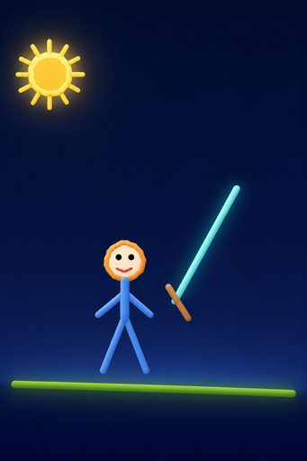
layout 69
align 0.24 · best 0.50× @ (8%, 12%)
elements
Green: shift 3.2% · scale 1.17×
Yellow: shift 0.2% · scale 1.91×
Blue: shift 19.8% · scale 1.28×
Teal: shift 12.0% · scale 1.41×
Default model: gpt-image-2 · low · scorer: tools/model-eval/lib/composition-score.mjs (higher layout = closer to the child's composition; align is identity-chamfer ÷ chance, lower = better; best names the drift transform)
Paint directly over this child's drawing so the finished picture lines up with the original: every shape stays exactly where the child drew it, at exactly the size the child drew it. Polish each drawn shape in place into a warm, whimsical illustration — vibrant color, charming details, soft light — without moving, enlarging, shrinking, or rearranging anything, and without zooming in or cropping. Treat the child's coloring as intent rather than texture: wherever they scribbled back and forth to fill a shape, render that whole region as one flat, even area of that solid color, the way a clean finished illustration would. Every part of the scene, including broad areas like the sky and ground, should read as a solid filled shape rather than visible individual strokes. Fill the open background with the atmosphere the drawing suggests — sky, light, water, or ground color in soft, even washes — but never with new objects or characters the child did not draw. This drawing was made on dark paper at night, so render the scene as a cozy night-time version of itself, softly lit by moonlight. The background and every large open area, the sky and ground included, must be a deep evening tone — midnight blue, deep indigo, dark twilight purple, or deep navy — never a bright daytime or pale color. Faces, skin, and animal bodies keep their natural living color, only darkened for night, never grey or ghostly, and every color the child chose must stay recognizably itself rather than sinking into mud. Convey the night with color and light alone: do not add a moon, stars, fireflies, lamps, hearts, or any other shape the child did not draw.
Paint directly over this child's drawing so the finished picture lines up with the original: every shape stays exactly where the child drew it, at exactly the size the child drew it. Polish each drawn shape in place into a warm, whimsical illustration — vibrant color, charming details, soft light — without moving, enlarging, shrinking, or rearranging anything, and without zooming in or cropping. Treat the child's coloring as intent rather than texture: wherever they scribbled back and forth to fill a shape, render that whole region as one flat, even area of that solid color, the way a clean finished illustration would. Every part of the scene, including broad areas like the sky and ground, should read as a solid filled shape rather than visible individual strokes. Fill the open background with the atmosphere the drawing suggests — sky, light, water, or ground color in soft, even washes — but never with new objects or characters the child did not draw.
Reimagine this child's drawing as a polished, magical illustration. Keep the original characters, shapes, and composition intact, but bring them to life with vibrant color, charming details, and a warm, whimsical feel. Treat the child's coloring as intent rather than texture: wherever they scribbled back and forth to fill a shape, render that whole region as one flat, even area of that solid color, the way a clean finished illustration would. Every part of the scene, including broad areas like the sky and ground, should read as a solid filled shape rather than visible individual strokes. Pay special attention to the ground: render it as one solidly filled area of even color.
| input | shipped prompt + dark-scene suffix production-night | shipped prompt: paint directly over + atmosphere (2026-08) production | pre-2026-08 production "reimagine" prompt legacy |
|---|---|---|---|
| mean layout | 84.5 $0.41 total | 85.4 $0.35 total | 63.6 $0.37 total |
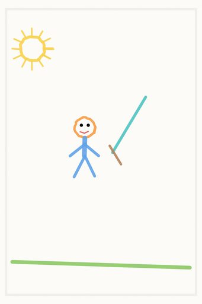 safety__toysword__tall |  layout 69 align 0.24 · best 0.50× @ (8%, 12%) elementsGreen: shift 3.2% · scale 1.17× Yellow: shift 0.2% · scale 1.91× Blue: shift 19.8% · scale 1.28× Teal: shift 12.0% · scale 1.41× | 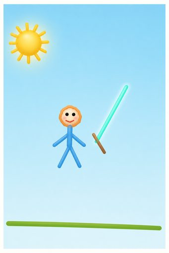 layout 84 align 0.10 · best 0.98× @ (-0%, 4%) elementsGreen: shift 2.1% · scale 1.43× Yellow: shift 1.1% · scale 2.08× Blue: shift 6.6% · scale 1.54× Teal: shift 25.4% · scale 7.84× | 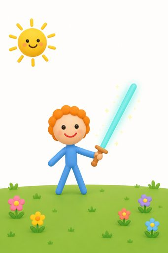 layout 79 align 0.14 · best 0.98× @ (-0%, 4%) elementsGreen: became background Yellow: shift 15.5% · scale 2.07× Blue: shift 14.1% · scale 2.16× Teal: shift 8.1% · scale 1.96× |
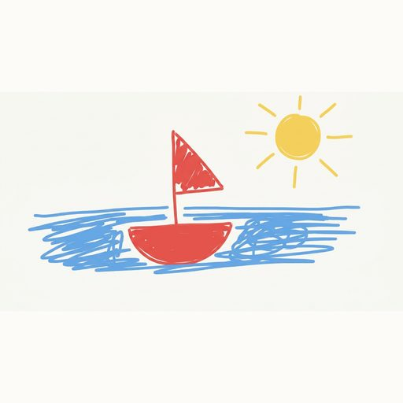 gen__boat-pond__square | 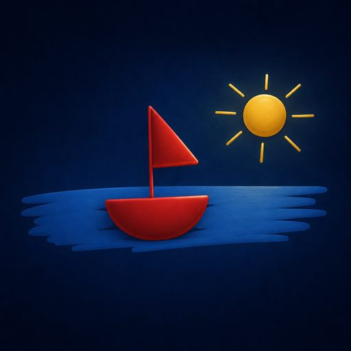 layout 86 align 0.05 · best 1.07× @ (-0%, -0%) elementsBlue: shift 25.5% · scale 0.41× Red: shift 4.2% · scale 0.82× Grey: not found Yellow: shift 3.2% · scale 0.78× | 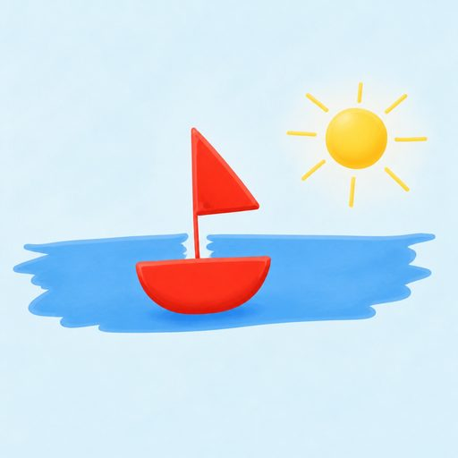 layout 82 align 0.15 · best 1.18× @ (-0%, -0%) elementsBlue: shift 3.3% · scale 1.64× Red: shift 7.1% · scale 0.59× Grey: shift 4.1% · scale 0.52× Yellow: shift 5.4% · scale 1.11× | 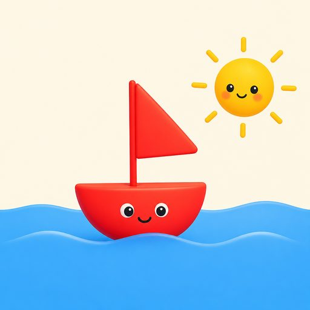 layout 59 align 0.34 · best 0.50× @ (-4%, 12%) elementsBlue: became background Red: shift 3.1% · scale 1.42× Grey: shift 10.3% · scale 0.39× Yellow: shift 8.7% · scale 1.44× |
gen__rocket-stars__tall | layout 90 align 0.04 · best 1.07× @ (-0%, -0%) elementsPurple: shift 3.7% · scale 1.00× Yellow: shift 1.2% · scale 1.29× Teal: shift 1.5% · scale 0.98× Blue: shift 7.4% · scale 0.95× Orange: shift 10.1% · scale 1.15× | layout 84 align 0.01 · best 1.07× @ (-0%, -0%) elementsPurple: shift 17.9% · scale 1.43× Yellow: shift 1.5% · scale 1.51× Teal: shift 1.6% · scale 0.94× Blue: shift 44.0% · scale 4.93× Orange: shift 0.5% · scale 1.20× | layout 42 align 0.43 · best 0.98× @ (-4%, 4%) elementsPurple: shift 10.7% · scale 1.96× Yellow: shift 1.7% · scale 2.08× Teal: shift 2.7% · scale 1.44× Blue: shift 47.9% · scale 3.43× Orange: shift 6.2% · scale 2.01× |
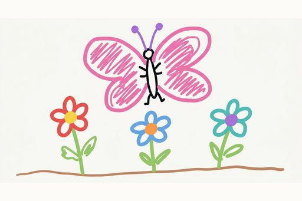 gen__butterfly-flowers__wide | 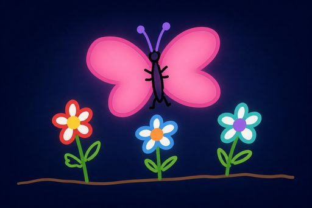 layout 85 align 0.05 · best 1.00× @ (0%, 0%) elementsPink: shift 0.5% · scale 1.43× Green: shift 3.7% · scale 0.74× Brown: shift 1.9% · scale 0.47× Teal: shift 0.7% · scale 0.99× Grey: shift 15.2% · scale 0.66× Red: shift 0.8% · scale 1.11× Blue: shift 0.8% · scale 1.15× Purple: shift 4.5% · scale 1.24× Black: shift 1.6% · scale 1.41× | 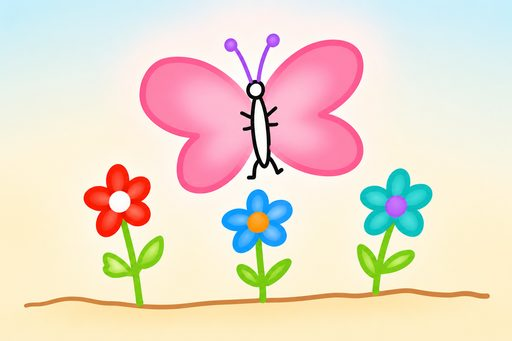 layout 83 align 0.05 · best 1.00× @ (0%, 0%) elementsPink: shift 0.9% · scale 1.38× Green: shift 4.8% · scale 0.58× Brown: shift 4.1% · scale 1.21× Teal: shift 1.2% · scale 1.27× Grey: shift 6.3% · scale 0.71× Red: shift 0.6% · scale 0.87× Blue: shift 1.0% · scale 1.42× Purple: shift 6.8% · scale 0.87× Black: shift 1.6% · scale 0.99× | 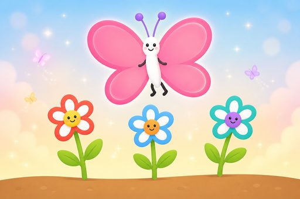 layout 47 align 0.45 · best 1.07× @ (-0%, -0%) elementsPink: shift 4.8% · scale 1.43× Green: shift 3.4% · scale 1.38× Brown: shift 29.4% · scale 0.37× Teal: shift 1.2% · scale 1.18× Grey: shift 32.0% · scale 5.13× Red: shift 1.4% · scale 1.30× Blue: shift 0.3% · scale 1.26× Purple: shift 7.3% · scale 1.21× Black: not found |
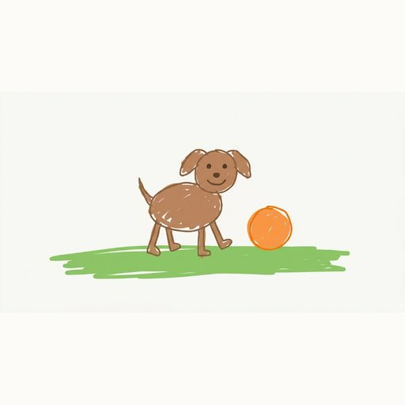 gen__dog-ball__square | 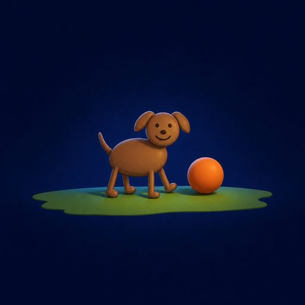 layout 90 align 0.02 · best 1.07× @ (-0%, -0%) elementsGreen: shift 9.2% · scale 0.16× Brown: shift 0.7% · scale 0.75× Orange: shift 2.6% · scale 0.70× Grey: not found | 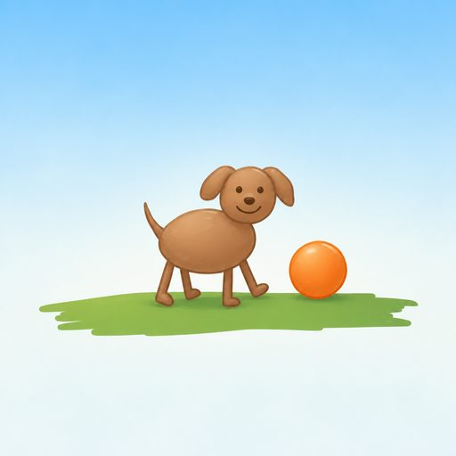 layout 91 align 0.06 · best 0.98× @ (-0%, 4%) elementsGreen: shift 4.2% · scale 1.18× Brown: shift 1.7% · scale 1.21× Orange: shift 3.8% · scale 1.34× Grey: shift 24.1% · scale 7.55× | 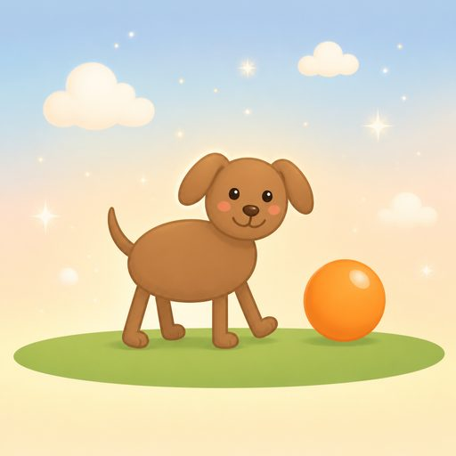 layout 36 align 0.47 · best 1.30× @ (-0%, 8%) elementsGreen: shift 14.2% · scale 1.49× Brown: shift 5.6% · scale 1.68× Orange: shift 11.1% · scale 2.96× Grey: became background |
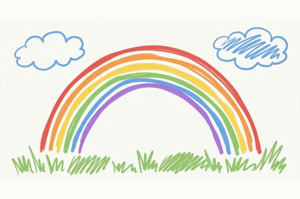 gen__rainbow-cloud__wide | 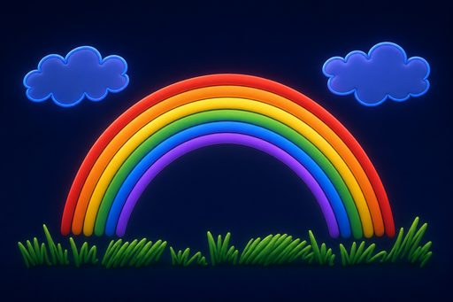 layout 82 align 0.02 · best 1.00× @ (0%, 0%) elementsGreen: shift 24.5% · scale 0.61× Grey: not found Blue: shift 12.8% · scale 0.32× Yellow: shift 1.3% · scale 1.08× Orange: shift 1.4% · scale 1.41× Red: shift 3.2% · scale 1.49× Purple: not found Brown: not found | 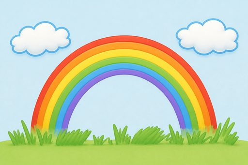 layout 83 align 0.07 · best 1.00× @ (0%, 0%) elementsGreen: became background Grey: shift 15.0% · scale 0.87× Blue: shift 16.7% · scale 1.09× Yellow: shift 1.9% · scale 1.45× Orange: shift 0.8% · scale 1.51× Red: shift 0.4% · scale 1.44× Purple: shift 1.9% · scale 1.37× Brown: shift 3.0% · scale 1.17× | layout 64 align 0.21 · best 1.00× @ (0%, 0%) elementsGreen: shift 12.8% · scale 0.95× Grey: shift 18.9% · scale 2.67× Blue: shift 18.2% · scale 1.49× Yellow: shift 3.1% · scale 1.97× Orange: shift 3.9% · scale 1.56× Red: shift 0.1% · scale 1.50× Purple: shift 5.6% · scale 1.37× Brown: shift 12.7% · scale 0.65× |
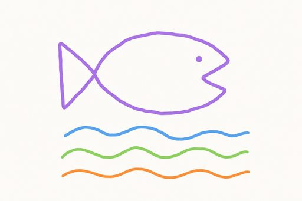 line__fish__wide | 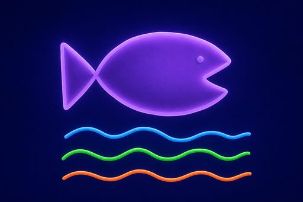 layout 90 align 0.00 · best 1.00× @ (0%, 0%) elementsPurple: shift 1.4% · scale 1.25× Blue: shift 0.1% · scale 1.03× Green: shift 3.1% · scale 0.43× Orange: shift 3.0% · scale 0.72× | 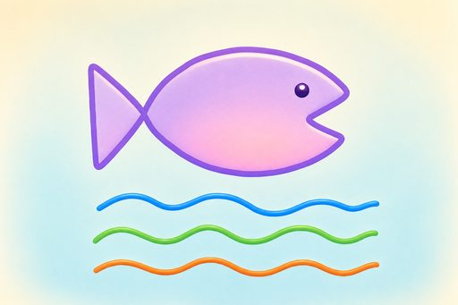 layout 96 align 0.00 · best 1.00× @ (0%, 0%) elementsPurple: shift 1.7% · scale 1.23× Blue: shift 2.0% · scale 1.01× Green: shift 1.2% · scale 1.25× Orange: shift 1.9% · scale 1.15× | 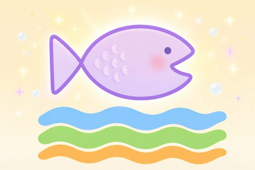 layout 79 align 0.05 · best 1.00× @ (0%, 0%) elementsPurple: shift 1.1% · scale 1.23× Blue: shift 3.6% · scale 2.64× Green: shift 4.9% · scale 2.87× Orange: shift 4.7% · scale 2.51× |
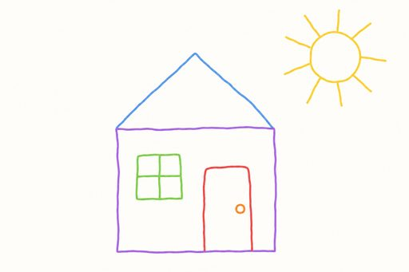 line__house-sun__wide | 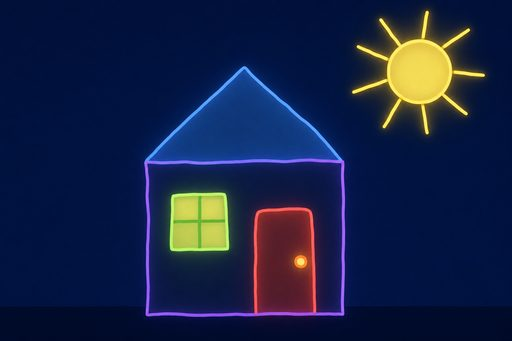 layout 91 align 0.00 · best 1.00× @ (0%, 0%) elementsYellow: shift 0.9% · scale 1.84× Green: shift 0.2% · scale 1.88× Blue: shift 2.6% · scale 1.07× | 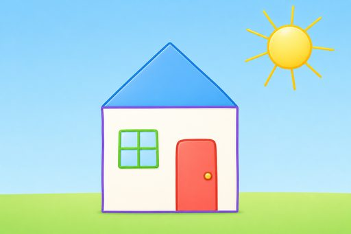 layout 89 align 0.01 · best 1.00× @ (0%, 0%) elementsYellow: shift 1.4% · scale 1.74× Green: shift 2.4% · scale 1.26× Blue: shift 2.2% · scale 3.68× | 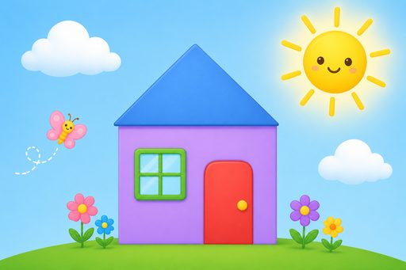 layout 84 align 0.09 · best 1.00× @ (0%, 0%) elementsYellow: shift 2.2% · scale 2.11× Green: shift 2.3% · scale 1.43× Blue: shift 25.3% · scale 1.63× |
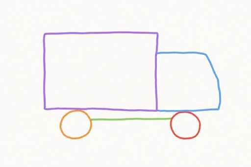 line__truck__wide | 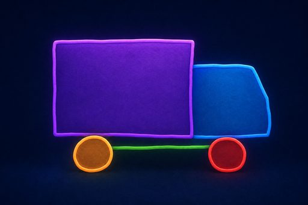 layout 80 align 0.00 · best 1.00× @ (0%, 0%) elementsPurple: shift 23.8% · scale 0.62× Blue: shift 13.2% · scale 0.89× Grey: not found Green: shift 1.7% · scale 1.15× Orange: shift 0.3% · scale 1.57× Red: shift 0.7% · scale 1.59× | 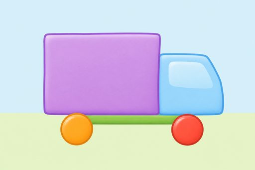 layout 73 align 0.00 · best 1.00× @ (0%, 0%) elementsPurple: shift 1.6% · scale 4.00× Blue: shift 7.0% · scale 1.83× Grey: shift 16.5% · scale 1.94× Green: shift 0.6% · scale 2.48× Orange: shift 0.6% · scale 2.75× Red: shift 0.5% · scale 2.83× | 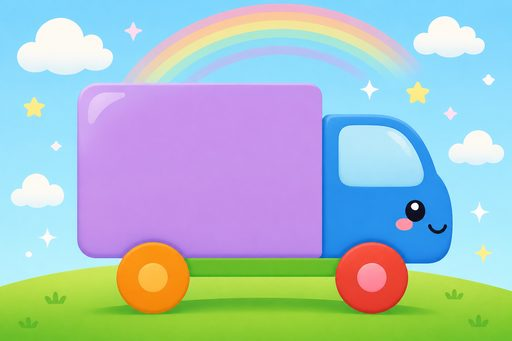 layout 21 align 0.56 · best 1.07× @ (-0%, 4%) elementsPurple: shift 7.2% · scale 4.28× Blue: shift 9.5% · scale 3.23× Grey: shift 39.6% · scale 2.47× Green: became background Orange: shift 6.0% · scale 3.06× Red: shift 5.2% · scale 2.97× |
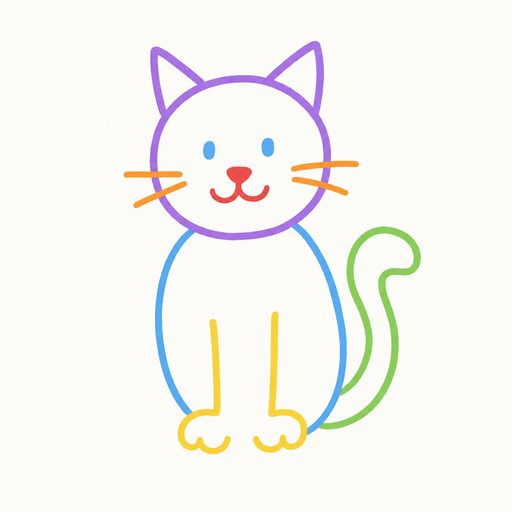 line__cat__square | 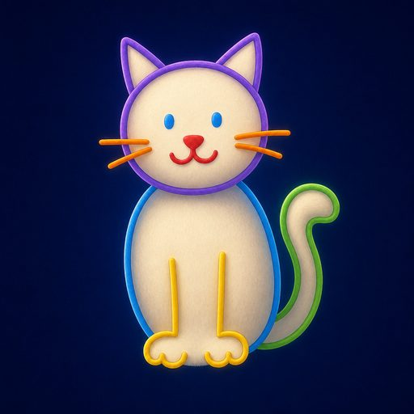 layout 88 align 0.00 · best 1.00× @ (0%, 0%) elementsPurple: shift 6.6% · scale 0.86× Green: shift 2.9% · scale 0.95× Blue: shift 4.0% · scale 0.93× Yellow: shift 0.9% · scale 1.13× Orange: shift 18.4% · scale 1.47× Red: shift 0.2% · scale 1.17× | 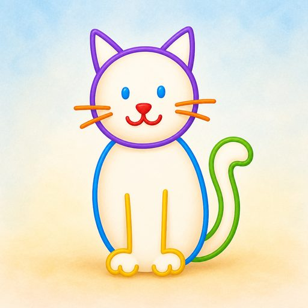 layout 80 align 0.00 · best 1.00× @ (0%, 0%) elementsPurple: shift 6.6% · scale 0.55× Green: shift 1.4% · scale 0.74× Blue: shift 4.4% · scale 1.08× Yellow: shift 5.2% · scale 1.69× Orange: shift 53.3% · scale 1.47× Red: shift 0.8% · scale 0.76× | 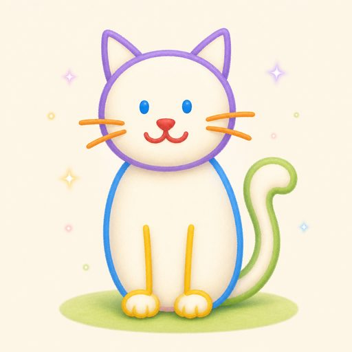 layout 82 align 0.02 · best 1.00× @ (0%, 0%) elementsPurple: shift 1.2% · scale 1.09× Green: shift 23.7% · scale 2.04× Blue: shift 6.2% · scale 1.15× Yellow: shift 4.7% · scale 1.46× Orange: shift 11.8% · scale 1.47× Red: shift 1.4% · scale 1.17× |
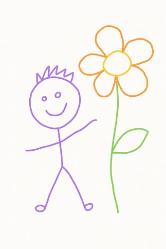 line__person-flower__tall | 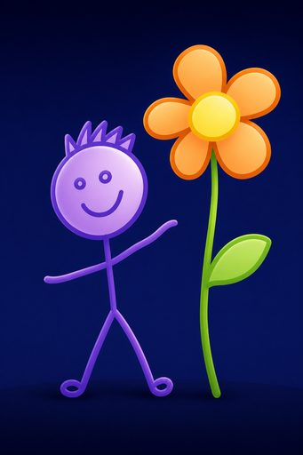 layout 78 align 0.00 · best 1.00× @ (0%, 0%) elementsPurple: shift 10.0% · scale 1.46× Orange: shift 0.7% · scale 2.39× Green: shift 4.4% · scale 1.57× Yellow: shift 3.1% · scale 3.66× | 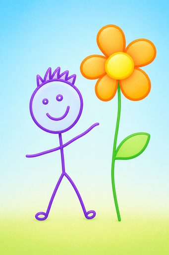 layout 83 align 0.00 · best 1.00× @ (0%, 0%) elementsPurple: shift 5.6% · scale 0.80× Orange: shift 1.5% · scale 1.99× Green: shift 6.1% · scale 1.18× Yellow: shift 3.9% · scale 4.38× | 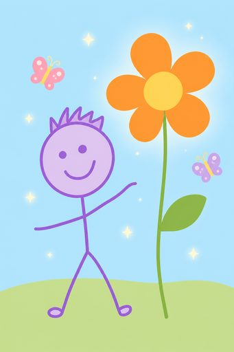 layout 70 align 0.21 · best 0.98× @ (-0%, 4%) elementsPurple: shift 3.7% · scale 1.23× Orange: shift 1.0% · scale 2.62× Green: became background Yellow: shift 1.1% · scale 2.14× |
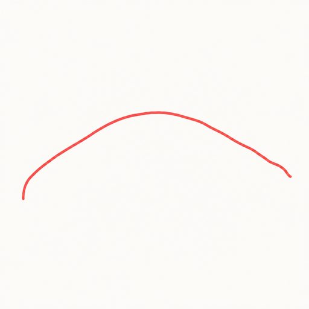 line__one-stroke__square | 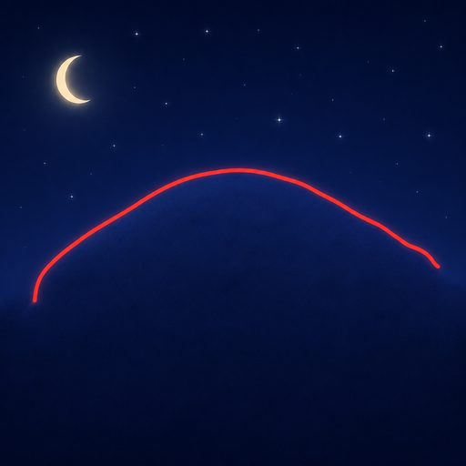 layout 100 align 0.00 · best 1.00× @ (0%, 0%) elementsRed: shift 3.3% · scale 0.81× | 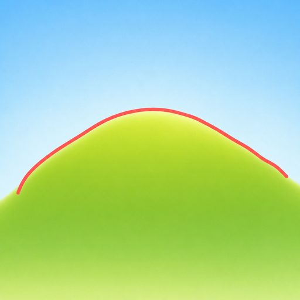 layout 100 align 0.00 · best 1.00× @ (0%, 0%) elementsRed: shift 1.5% · scale 1.19× | 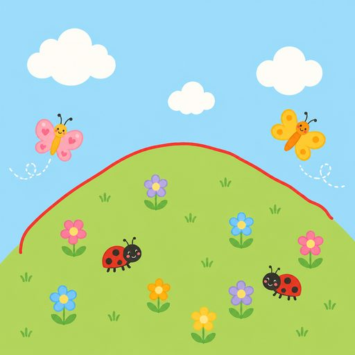 layout 16 align 0.68 · best 1.07× @ (-0%, 4%) elementsRed: shift 23.1% · scale 1.01× |
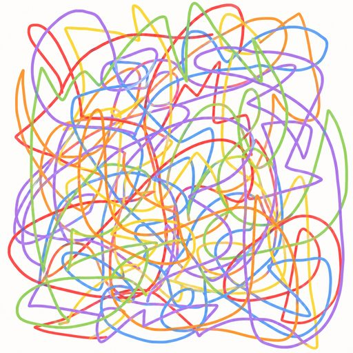 line__scribble__square | 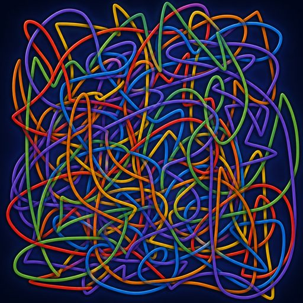 layout 85 align 0.01 · best 1.00× @ (0%, 0%) elementsPurple: shift 19.8% · scale 0.42× Blue: shift 18.2% · scale 0.29× Orange: shift 10.6% · scale 0.49× Green: shift 0.4% · scale 0.57× Yellow: shift 11.8% · scale 0.38× Red: shift 3.8% · scale 0.71× Grey: shift 5.5% · scale 0.22× Brown: shift 4.8% · scale 0.74× Pink: not found Indigo: shift 14.5% · scale 2.17× Lime: shift 5.7% · scale 0.92× | 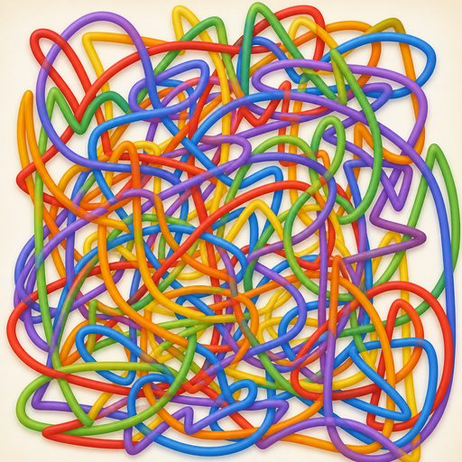 layout 91 align 0.01 · best 1.00× @ (0%, 0%) elementsPurple: shift 10.4% · scale 1.15× Blue: shift 8.7% · scale 0.96× Orange: shift 6.4% · scale 1.11× Green: shift 3.0% · scale 1.18× Yellow: shift 2.4% · scale 1.12× Red: shift 5.8% · scale 1.27× Grey: shift 10.4% · scale 0.65× Brown: shift 2.7% · scale 1.12× Pink: shift 9.8% · scale 0.66× Indigo: shift 8.6% · scale 3.91× Lime: shift 11.4% · scale 3.04× | 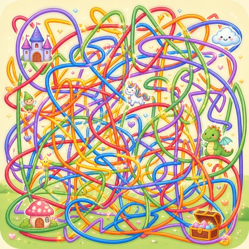 layout 76 align 0.09 · best 1.00× @ (0%, 0%) elementsPurple: shift 15.8% · scale 0.90× Blue: shift 7.1% · scale 0.86× Orange: shift 7.5% · scale 0.93× Green: shift 9.9% · scale 1.20× Yellow: shift 12.2% · scale 0.95× Red: shift 4.4% · scale 1.08× Grey: shift 31.1% · scale 0.63× Brown: shift 22.0% · scale 0.55× Pink: shift 47.7% · scale 0.58× Indigo: shift 15.6% · scale 2.79× Lime: shift 26.6% · scale 3.22× |
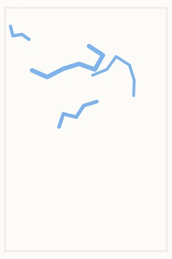 scribble-1color__blue__tall | 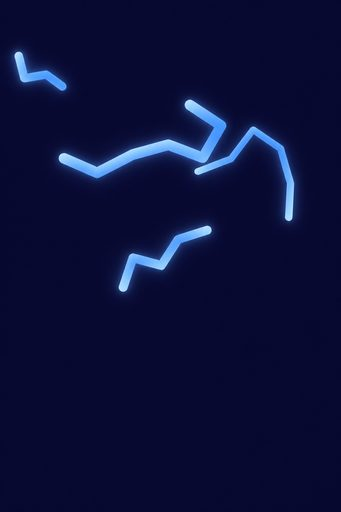 layout 96 align 0.07 · best 1.07× @ (4%, 4%) elementsBlue: shift 10.5% · scale 1.28× Grey: shift 3.7% · scale 0.61× | 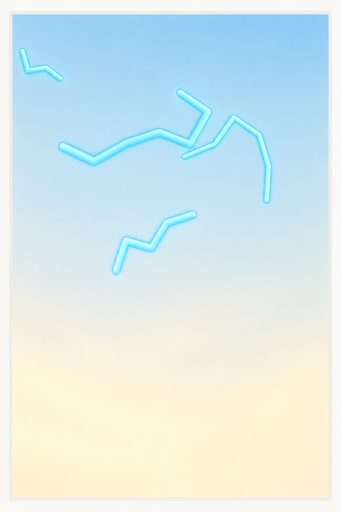 layout 93 align 0.03 · best 1.00× @ (0%, 0%) elementsBlue: shift 33.7% · scale 1.27× Grey: shift 5.6% · scale 8.27× | layout 92 align 0.11 · best 1.07× @ (4%, -0%) elementsBlue: shift 6.1% · scale 2.15× Grey: shift 61.8% · scale 0.54× |
scribble-1color__black__tall | layout 95 align 0.01 · best 1.00× @ (0%, 0%) elementsGrey: shift 25.7% · scale 0.29× Black: became background | layout 93 align 0.05 · best 1.00× @ (0%, 0%) elementsGrey: shift 48.9% · scale 4.30× Black: not found | layout 94 align 0.05 · best 1.00× @ (0%, 0%) elementsGrey: shift 27.2% · scale 0.90× Black: not found |
art-detail__cat-med__square | layout 87 align 0.04 · best 0.98× @ (-0%, -0%) elementsOrange: shift 4.6% · scale 2.49× | layout 87 align 0.01 · best 0.98× @ (-0%, -0%) elementsOrange: shift 5.6% · scale 2.25× | layout 85 align 0.06 · best 1.18× @ (-0%, 4%) elementsOrange: shift 8.6% · scale 2.83× |
coloring-manual__apple__tall | layout 52 align 0.26 · best 0.50× @ (-12%, 16%) elementsGrey: not found Red: shift 15.9% · scale 0.49× Green: shift 16.7% · scale 0.68× Black: shift 11.7% · scale 0.43× Brown: shift 36.1% · scale 1.02× | layout 66 align 0.15 · best 1.00× @ (0%, 0%) elementsGrey: shift 4.9% · scale 0.39× Red: shift 14.0% · scale 1.22× Green: shift 11.6% · scale 2.10× Black: shift 7.7% · scale 0.77× Brown: shift 16.9% · scale 0.73× | layout 43 align 0.33 · best 1.07× @ (-0%, -0%) elementsGrey: shift 60.9% · scale 0.63× Red: shift 13.5% · scale 1.27× Green: shift 27.1% · scale 0.95× Black: not found Brown: shift 6.1% · scale 0.92× |
coloring-magic__balloon__tall | layout 84 align 0.01 · best 1.00× @ (0%, 0%) elementsGrey: shift 19.4% · scale 1.01× Red: shift 31.0% · scale 1.85× | layout 88 align 0.07 · best 1.07× @ (-0%, -0%) elementsGrey: shift 12.9% · scale 0.72× Red: not found | layout 69 align 0.21 · best 1.07× @ (-0%, -0%) elementsGrey: shift 32.5% · scale 0.71× Red: shift 12.3% · scale 4.03× |
magic-plain__loops__square | layout 80 align 0.01 · best 1.00× @ (0%, 0%) elementsBlue: shift 4.7% · scale 0.78× Orange: shift 2.1% · scale 1.07× Red: shift 5.3% · scale 1.01× Lime: shift 3.7% · scale 1.20× Mint: shift 1.3% · scale 1.06× Yellow: shift 4.0% · scale 1.65× Teal: shift 6.0% · scale 1.62× Indigo: shift 3.6% · scale 1.42× Pink: shift 10.5% · scale 1.36× Brown: shift 8.6% · scale 0.78× Green: shift 10.3% · scale 2.48× | layout 76 align 0.02 · best 1.00× @ (0%, 0%) elementsBlue: shift 3.4% · scale 0.85× Orange: shift 3.4% · scale 1.23× Red: shift 2.9% · scale 0.93× Lime: shift 7.4% · scale 1.45× Mint: shift 1.6% · scale 1.38× Yellow: shift 4.1% · scale 1.85× Teal: shift 14.6% · scale 1.88× Indigo: shift 2.9% · scale 1.43× Pink: shift 10.0% · scale 1.92× Brown: shift 4.7% · scale 0.58× Green: shift 13.0% · scale 2.72× | layout 70 align 0.07 · best 1.00× @ (0%, 0%) elementsBlue: shift 4.9% · scale 0.83× Orange: shift 9.4% · scale 1.46× Red: shift 5.2% · scale 1.06× Lime: shift 5.0% · scale 1.26× Mint: shift 21.2% · scale 2.29× Yellow: shift 12.4% · scale 2.61× Teal: shift 5.3% · scale 2.02× Indigo: shift 7.6% · scale 1.22× Pink: shift 4.1% · scale 1.40× Brown: shift 12.4% · scale 5.52× Green: shift 42.8% · scale 7.10× |
night__circle__tall | layout 89 align 0.00 · best 1.00× @ (0%, 0%) elementsGrey: shift 36.3% · scale 0.31× Black: shift 7.6% · scale 0.89× | — | — |
night__heart__tall | layout 78 align 0.01 · best 1.00× @ (0%, 0%) elementsGrey: shift 19.6% · scale 0.12× Yellow: shift 18.6% · scale 3.76× Black: shift 19.9% · scale 2.15× Teal: shift 2.8% · scale 1.01× Brown: shift 5.5% · scale 1.02× Purple: shift 23.0% · scale 2.56× | — | — |